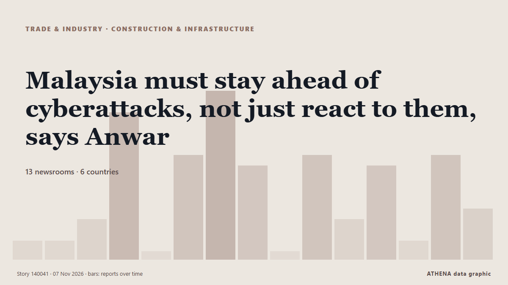

Εμπόριο, Βιομηχανία & Υποδομές
ΧορηγούμενοΠαρουσιάζεται από  Cybernetics and Artificial Intelligence Lab Welcome to the Cybernetics and Artificial Intelligence Laboratory, established at the Department of Business Administration of the National and Kapodistrian University of Athens. The lab is headed by Professor Dimitrios Thomakos. The lab aims to do research that can be published in top venues. Our research uses tools and methods of Artificial Intelligence, and lies in the following areas: - Forecasting - Decision making - Cyber security - Finance We are always looking forward to collaborating with exceptional students!
Cybernetics and Artificial Intelligence Lab Welcome to the Cybernetics and Artificial Intelligence Laboratory, established at the Department of Business Administration of the National and Kapodistrian University of Athens. The lab is headed by Professor Dimitrios Thomakos. The lab aims to do research that can be published in top venues. Our research uses tools and methods of Artificial Intelligence, and lies in the following areas: - Forecasting - Decision making - Cyber security - Finance We are always looking forward to collaborating with exceptional students!
Οι τίτλοι των ειδήσεων παρουσιάζονται στα αγγλικά, όπως δημοσιεύτηκαν.

Κατασκευές & υποδομέςMalaysia must stay ahead of cyberattacks, not just react to them, says Anwar
KUALA LUMPUR, Nov 4 — Malaysia highlighted opportunities for cooperation in the semiconductor, artifici... από Malay Mail
| 25 Οκτ | 57 |
|---|---|
| 26 Οκτ | 117 |
| 27 Οκτ | 103 |
| 28 Οκτ | 94 |
| 29 Οκτ | 95 |
| 30 Οκτ | 99 |
| 31 Οκτ | 36 |
| 1 Νοε | 66 |
| 2 Νοε | 128 |
| 3 Νοε | 91 |
| 4 Νοε | 91 |
| 5 Νοε | 102 |
| 6 Νοε | 64 |
| 7 Νοε | 13 |
US FAA to eliminate floppy disks from air traffic control by 2028
The US federal Aviation Administration (FAA) is finally moving to retire floppy disks from its air traffic control infrastructure, with plans to to replace four decades-old information systems across… από Tom's Hardware
Iran says two oil tankers hit naval mines in Strait of Hormuz
Coalition says it destroyed two ballistic missile launchers The Coalition has released footage it says shows the targeting and destruction of two ballistic missile launch platforms. από Gulf News
US Mission to UAE warns Americans of increased threat of attacks across Middle East
Abu Dhabi: The United States has urged Americans across the Middle East to exercise heightened vigilance, warning of an increased threat of armed attacks by Yemen's Iran-backed Houthi group and… από Gulf News
Kazakhstan and Kuwait Agree to Expand Trade, Investment and Food Security Cooperation
Kuwait City, Oct 30: Kazakhstan and Kuwait held the second round of political consultations between their Ministries of Foreign Affairs, reaffirming their commitment to further str... από Arab Times
Peru airport thwarts plot to smuggle 3,000 tarantulas in dirty socks
During a routine customs inspection, agents noticed some unusual wriggling inside the luggage. από The Straits Times
Bomb threats disrupt European airports: 25 flights diverted in a single day
Anonymous tip-off about explosives on Ryanair planes from Lisbon and Dublin prompted fighter jet escort; similar false alerts reported across Europe on Tuesday. από Wanted in Rome (working feed)
Singapore Airlines to splash $1.6 billion on luxury long-haul cabins as rivals up their game
SINGAPORE: Singapore Airlines, long a benchmark for premium travel, is spending more than S$2 billion ($1.6 billion) to upgrade long-haul seats and provide larger double-bed suites to compete with… από Business Recorder
Seafarer killed in suspected missile attack on tanker in Gulf
ATHENS, Nov 6 - One seafarer was killed in an explosion believed to have been caused by a missile attack on an oil products tanker in the Gulf on Thursday, the ship's manager said on Friday. από The Straits Times
Türkiye warns French-flagged vessel against unauthorised research in Eastern Mediterranean
Türkiye has warned that a French-flagged vessel is planning to conduct unauthorised marine scientific research in an area of the Eastern Mediterranean that Ankara considers part of its continental… από AzerNews
European Air Traffic Targeted by New Threats in at Least 3 Incidents
Officials across Europe report more bomb threats against flights, following a series of hoaxes causing diversions this week. από ABC News (International)
US presses China to ‘immediately’ honor Busan trade commitments
In call with Chinese vice premier, Treasury Secretary Scott Bessent raises concerns over ‘recent Chinese actions,’ says progress depends on ‘concrete results' από Anadolu Agency (English)
Pikitup says some Joburg areas face another week of refuse backlogs
Pikitup says it has implemented its recovery plan to address the waste collection backlog caused the SAMWU strike. από IOL
Singapore-Norway launch joint research grant call to advance greener shipping
The Maritime and Port Authority of Singapore (MPA), the Research Council of Norway (RCN) and the Singapore Maritime Institute (SMI) have launched a joint research grant call to develop solutions to… από Ship.Energy
Judge blocks construction of Trump’s massive arch after federal agency approval
A federal judge has temporarily blocked construction of US President Donald Trump's "triumphal arch" in Washington. από MyJoyOnline
UN says struggling to help millions fleeing Sudan war find shelter
The United Nations on Friday said about 15.4 million people who have fled conflict in Sudan need emergency shelter and essential household items, but humanitarian organisations are facing funding… από Africanews (English)
Tankers carrying Russian diesel to the US change course
Despite an ostensible deal between Donald Trump and Vladimir Putin to bring diesel to the US, tankers are reportedly unable to dock due to existing sanctions. από DW English
Email containing threats against flights signed by Russian extremist cell
(ANSA) - ROME, 05 NOV - An email containing bomb threats against six Italian flights out of 18 in Europe Thursday was signed by a Russian extremist cell. από ANSA English
Democrats gain influence over trade agenda, but tariff repeals to hit Trump veto wall
HOUSTON: Democrats’ resounding sweep to a majority in Congress gives them a big microphone and spotlight to scrutinize President Donald Trump’s trade policies, but largely leaves them unable to… από Business Recorder
Aer Lingus passenger's 'teary' moment as Dublin to Rome flight diverted by bomb threat
Dublin-Rome flight diverted to France over bomb threat: French government. από Gulf News
Kunal Pathak Appointed as VP of Strategic Partnerships at ShipIn Systems
ShipIn Systems, a provider of AI-powered maritime risk intelligence, announced the appointment of Kunal Pathak as Vice President of Strategic Partnerships. από MarineLink
Ukraine to resume medical air evacuation flights by year-end, PM says
The government has approved regulations governing the flights, which will be used to transport patients, medical personnel, donor organs and equipment between hospitals, as well as to take patients… από Kyiv Independent
Spanish submarine sinks retired patrol vessel in live-fire exercise (VIDEO)
The Spanish Navy’s S-81 submarine Isaac Peral has sunk the decommissioned offshore patrol vessel Infanta Elena with a single torpedo during the... από Naval Today
Tanker struck by 2 unidentified projectiles off Qatar coast: UK maritime agency
Incident reported 50 nautical miles north of Madinat ash Shamal, with crew condition, vessel damage and environmental impact yet to be confirmed. από Anadolu Agency (English)
Russian night attack damages energy infrastructure in Kyiv region, three injured
The consequences of a Russian overnight attack were reported in three districts of the Kyiv region, with three people injured. από Ukrinform (English)
Iran's IRGC says two tankers and tugboat caught fire in Strait of Hormuz
Iran’s Islamic Revolutionary Guard Corps said on Thursday that two oil tankers and a tugboat had caught fire in separate incidents after attempting to use unauthorised routes through the Strait of… από Business Recorder
Hapag-Lloyd passes 1m teu in Africa and targets 1.7m teu by 2030
Hapag-Lloyd's African volumes have crossed 1m teu, the carrier said as it marked 20 years in South Africa. από Container Magazine
India joins ISF Verify initiative for digital seafarer certification
India has joined the ISF Verify initiative, marking a significant step towards the wider adoption of digital seafarer certification across the global shipping industry. από Container News
LR Report Finds Alternative-Fuel Vessels Outpace Port Readiness
Alternative-fuel vessel orders are outpacing the development of the port infrastructure needed to support them, according to a new global study by Lloyd’s Register (LR)… από Maritime Professional
Report: South Korea's anti-piracy unit to expand operations closer to Hormuz Strait
SEOUL, Nov. 5 (Yonhap) -- South Korea plans to expand its anti-piracy mission of... από Yonhap (English)
Iran allows Indian, Chinese ships to transit Hormuz
Iran has exempted Indian ships from the restrictions it imposed on passage through the Strait of Hormuz, along with vessels from China, Iraq, and Qatar, a senior Iranian lawmaker has said. από The Island
Greece, Cyprus, Israel Again Voice Rejection of Turkey-Libya Maritime Deal
A trilateral meeting in Athens focused on maritime security, defense industry cooperation and regional threats, with the three countries challenging the legal validity of the Turkey-Libya memorandum… από To Vima (English)
Third wave of 'hoax' bomb threats hit 27 passenger flights across Europe
Bomb threats have affected at least 27 flights in Europe on Thursday , including in France, Bulgaria, Italy, Austria, Belgium and the Czech Republic. από ABC News Australia
Iran protests IMO’s biased reports on shipping security
London, IRNA – The Islamic Republic of Iran has criticized the International Maritime Organization (IMO) biased reports on the shipping crisis, stressing that seafarer protection should not be… από IRNA (English)